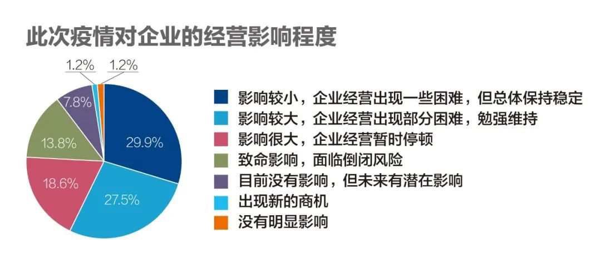
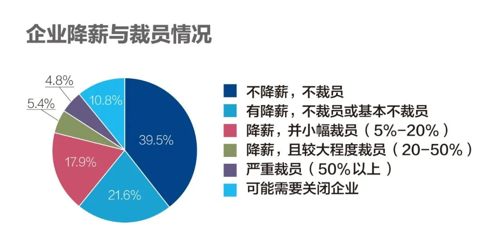
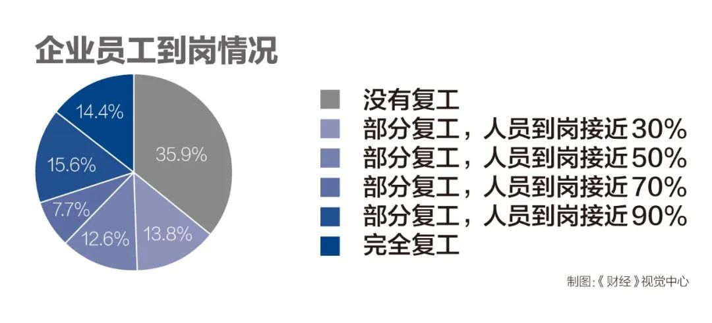
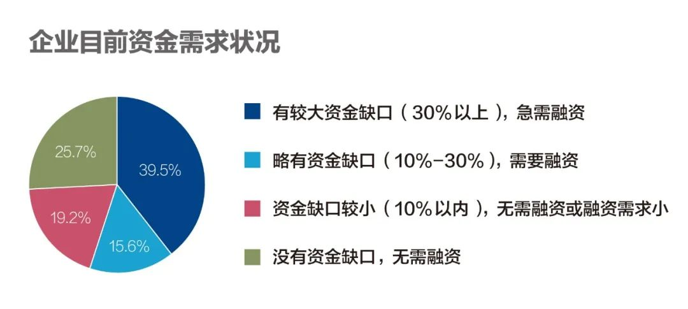
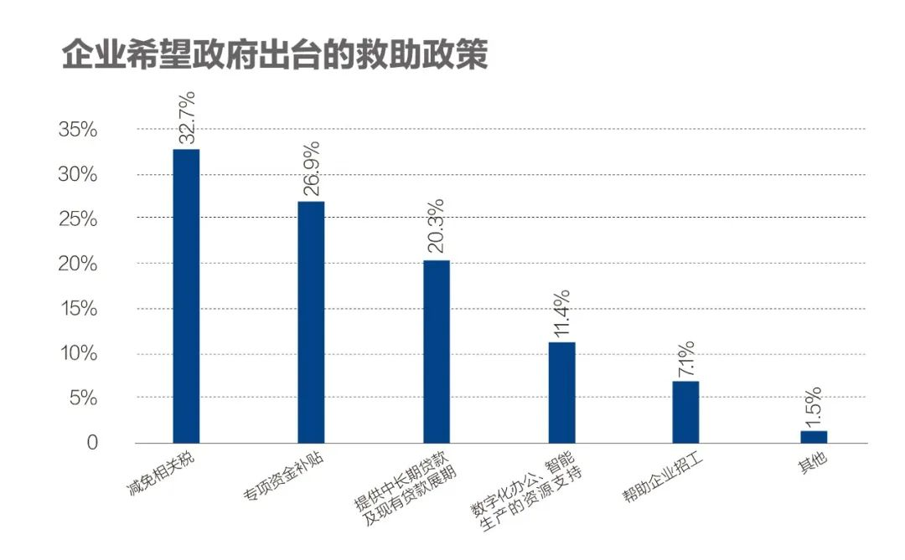
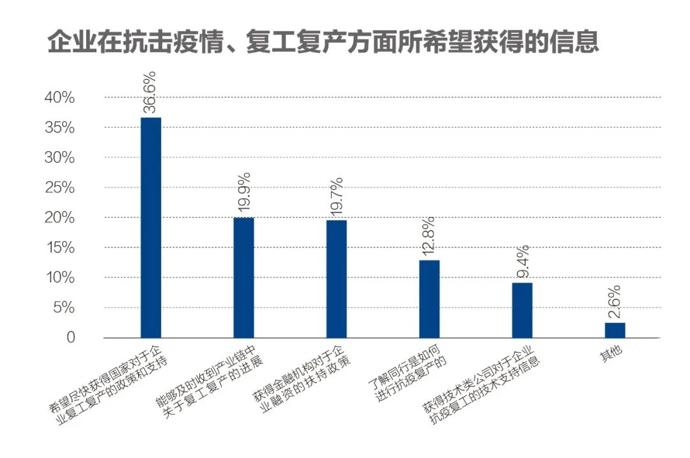
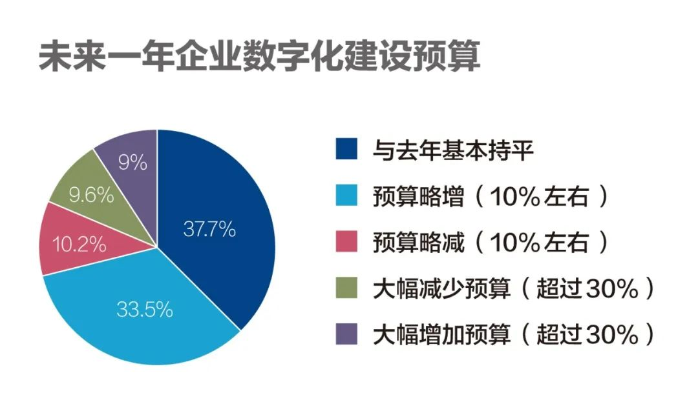
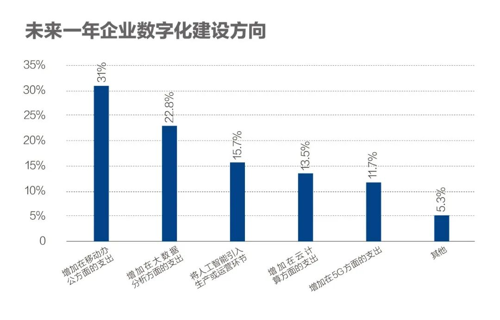

湖北上市公司的复工焦虑：有的停不得，有的赔不起
原文链接 备份链接 2019年上半年占据湖北省GDP约五分之一的112家省内上市公司，目前复工情况各异。部分公司影响不大，但也有企业收入面临较大下滑风险 文丨《财经》记者 张建锋 王颖 张欣培 刘以秦 编辑丨陆玲 3月16日，《财经》记 …

参与《财经》调研的多位企业人士表示，希望政府的金融扶持能更好地惠及小微企业

文 | 《财经》记者 周源
编辑 | 谢丽容
进入2020年3月以来，中国的新冠肺炎疫情蔓延已得到了有力控制，新增确诊和新增疑似病例呈逐日大幅下降趋势，多个省市已连续多日本地新增确诊为0或个位数，抗疫已经取得阶段性重大进展。但近期海外疫情呈全面暴发趋势，有的国家疫情严重程度甚至超过之前的中国，而各国采取的抗疫措施也不尽相同。对中国而言，如何继续打好国内防疫战并严防境外疫情倒灌输入，同时实事求是地推动有条件的地区企业复工复产，成为中国当前经济发展的头等大事。
为了解中国境内企业现阶段复工复产的真实状况，以及它们的担忧和关切，《财经》杂志近期推出的在线问卷调查《疫情给您的企业带来哪些影响》，在7天时间里共收到648份有效问卷，覆盖全国60余个城市的数百家企业，它们给出的回应，对政商学界更准确把握中国企业抗疫现状，应当有参考价值。
参与此次《财经》问卷调查的企业中，71%为民营企业，其次是国有企业（占比17.4%）。从行业分布来看，参与调查企业主要来自制造业（20.4%）;文化、体育和娱乐业（11.4%）；批发和零售业(10.8%)；信息传输、软件和信息技术服务业（9.6%）；建筑业（9.0%）；金融业（7.2%）；教育业（6.6%）；科学研究和技术服务业（5.4%）。
并且，46.7%的企业是To B型企业，即面向企业客户提供产品与服务，To C（面向个人用户）型企业仅27.5%，剩下25.8%的企业为To B与To C两种模式兼有。
或许是因为受调对象里，仅5%的企业属于纯线上经营模式，高达 59%的属于纯线下经营，剩下36%的企业属于线上线下混合经营，因此，此次《财经》调查显示，企业复工复产情况可谓喜忧参半。

截至3月13日，35.9%的参与调查企业还没有复工，有13.8%的企业表示面临倒闭风险，41.9%的企业预计上半年的营收将因疫情同比减少50%以上。

尽管企业普遍面临短期经营困难，但表示“不降薪也不裁员”的企业达到39.5%，“有降薪，基本不裁员”的企业达到21.6%，“降薪，并小幅裁员5%-20%”的达到18%，三类合计79.1%。

令人略感欣慰的是，经此一“疫”，数字化建设的重要性已经成为共识，疫情期间，39.9%的企业采用了在线办公工具维持业务运转，12.8%的企业加速将业务迁移到云平台。
2月23日，中央统筹推进新冠肺炎疫情防控和经济社会发展工作部署会议，会议上表示，要用好中央预算内投资、专项债券资金和政策性金融，优化投向结构。一些传统行业受冲击较大，而智能制造、无人配送、在线消费、医疗健康等新兴产业展现出强大成长潜力。要以此为契机，改造提升传统产业，培育壮大新兴产业。
3月4日，中央政治局常务委员会会议进一步强调，要加大公共卫生服务、应急物资保障领域投入，加快5G网络、数据中心等新型基础设施建设进度，要注重调动民间投资积极性。
这将深刻影响企业未来经营的方向。《财经》调查显示， “增加现金储备”（25.1%）、“加大数字化规划和投资”（20.8%）、“调整供应链、分散风险”（20.4%）成为了企业灾后经营调整的三大重点。

企业担心上半年经营情况
《财经》此次调研的数据显示，参与此次《财经》调查的77.9%来自小微型企业（员工人数不足500），中型企业占比17.9%，员工超过5000以上大型企业占比为4.2%。
这与我国实体经济结构基本吻合。中小企业是数量最大企业群体，根据第四次全国经济普查的数据显示，截至2018年末，我国中小企业法人单位共有1807万家，占全部规模企业法人单位的99.8%，因此，中小企业的复工复产极为重要，中小企业稳则就业稳、经济稳。
截至3月13日，35.9%的参与调查企业还没有复工，部分复工，但人员到岗率不足50%的达到26.3%，完全复工的仅14.4%。

疫情期间，13.6%的企业担心年度销售计划难以落实，12.9%的企业称订单少于往年同期，有14%的企业担忧面临倒闭风险，42%的企业预计上半年的营收将因疫情同比减少50%以上。

3月13日，工业和信息化部副部长辛国斌公开指出，当前企业复工复产过程当中仍然存在五点困难。
这五点困难包括：一是人员流动存在“痛点”，企业用工短缺依然存在，一些关键岗位员工受困于疫情严重地区难以返岗；二是物流运输存在“堵点”，“最后一公里”的问题没有完全解决；三是中小企业现金流存在“断点”，政府出台的各项扶持政策缓解了中小企业的资金压力，但是在一些地方有一些企业反映这些政策看得见摸不着；四是原材料供应存在“卡点”，一些企业原材料不足，部分重要原料企业没有复工复产；五是防疫物资不足存在“难点”。防疫物资产能产量虽然有了较大幅度的提升，但是面对复工复产带来的巨量需求，供给依然存在不小缺口。
2月中上旬，《财经》记者曾调研了珠三角地区部分科技企业。调查显示，企业进出口供应链当时还没有受太大影响，有一些大公司正筹划将产能临时转移至海外分支机构，但随着新冠疫情全球蔓延，海外诸多国家也在陆续采取居家隔离、停工停学等方式阻击病毒，全球产业链“中断”风险势必增大，这将给中国企业的复工复产蒙上新的阴影。
疫情会不会引发大规模地降薪和裁员也是备受关注的问题。《财经》调查显示，“不降薪不裁员”的企业到达39.5%，“严重裁员（超过50%以上）”以及“可能需要关闭企业”的合计占比达到15.6%。
短期：最盼真金白银支持
为了帮助企业尽快复工复产，目前国家多个机构已出炉有关政策。
2月20日，人力资源社会保障部、财政部和税务总局联合推出《关于阶段性减免企业社会保险费的通知》，为企业阶段性“免减缓”社保、医保和住房公积金。人社部副部长游钧在相关新闻发布会上表示，预计这次阶段性减免共可减少三项社保企业缴费5000亿元以上。
2月26日，中国央行宣布新增再贷款、再贴现额度5000亿元，主要用于支持企业复工复产。人民银行数据显示，截至3月15日，金融机构累计发放优惠利率贷款共1114亿元。
北京在3月16日出台《关于全力做好疫情防控工作，保障企业有序复工复产的若干措施》。该措施共十条，从“食、住、用、行”4个方面为企业提供复工服务保障。例如，在企业用工方面，北京相关机构协调安排开通专车专列，目前已“点对点”协调开通77辆专车、8个列车专厢，从山东、四川、陕西、江苏等省运送2735名务工人员返京返岗。
同一天，黑龙江省政府称将设立总规模100亿元的中小企业稳企稳岗基金，为中小企业纾困解难，坚持财政政策与金融、产业、就业等政策协同联动，充分发挥基金引导和撬动作用，使中小企业获得更多信贷资金。100亿元基金中，有省级基金60亿元，市县基金40亿元。
安徽省则从加快复工复产进度、加大稳岗用工保障、缓解中小微企业融资难融资贵融资慢等7个方面，出台22条措施，重在推动上下游产供销大中小企业整体配套协同复工。
调查结果显示，在政府已经出台的支持性政策中，多个企业留言表示“社保费减免”和“减税”是企业认为能起到实际作用的。
但过半企业现阶段希望得到资金上的“输血”：选择“有较大资金缺口（30%以上），急需融资”的企业达到39.5%；表示“略有资金缺口（10%-30%），需要融资”的企业达到15.6%。

因此，种种救助扶持政策中，企业最青睐的与真金白银相关：选择 “减免相关税”的企业占比达到32.7%；26.9% 的企业希望能拿到“专项资金补贴”；20.3% 的企业希望政府及相关机构“提供中长期贷款及现有贷款展期”。

多位被调研企业人士进一步表达了同样意见，即希望政府的金融扶持真正的落到企业头上，而不是被个别中介和大企业拿走，希望能惠及到小微民办企业。
3月17日，人民银行召开电视电话会议再次强调，5000亿元再贷款再贴现政策要偏向抗击疫情冲击能力较弱的小微企业复工复产，支持生猪等畜禽养殖、水产养殖、磷肥生产等春耕备耕关键领域，支持国际供应链产品生产等外贸领域，支持贫困地区经济社会发展，对受疫情影响较大的旅游娱乐、住宿餐饮、交通运输等行业，也要做好金融支持工作。
此外，虽然各种政策密集出台，企业在获得和使用信息上可能存在信息不通畅。
《财经》调查显示，36.6% 的企业“希望尽快获得国家对于企业复工复产的政策和支持”；19.9%“能够及时收到产业链中关于复工复产的进展”的企业达到20%；19.7%的企业希望“获得金融机构对于企业融资的扶持政策”。

《财经》记者的跟踪调查显示，目前已经有高新园区管理方注意到了企业的这一需求。
中关村软件园是北京著名的高新技术园区，云集了腾讯、百度、网易、联想、IBM、科大讯飞等众多中外高科技企业，在园从业软件工程师超过8万人。园区管理方，北京中关村软件园发展有限公司的工作人员告诉《财经》记者，园区将很快上线专项查询平台，让企业一分钟即能查询到自己能获得哪些政策与资金的支持，并快速或许相关申报文件。
中长期：超40%企业考虑增加数字化投资
新冠肺炎破坏力远超2003年的SarS，采取防控措施也堪称前所未有。庆幸的是，无论是中国还是全球，科技水平比17年前进步很多。
17年前，人们还处于2G移动通信时代，手中拿着的是诺基亚、三星等功能手机，今天的互联网巨头阿里、腾讯和百度等那时也都还处于创业起步阶段。如今，5G即将大规模商用，移动互联网、大数据、AI、云计算、超级计算机在等科技技术在病毒溯源、医药研究、疫情监测分析、人员流动监测、社区管理和企业复工复产等方面发挥了显著作用。
例如，在华为技术的加持下，深圳机场已支持旅客不脱口罩即可实现人脸识别和身份认证；借助超级计算机，上海市公共卫生临床中心10小时就完成了新冠病毒基因测序工作；武汉的火神山医院和雷神山医院可以采用5G实现远程会诊；腾讯、阿里的健康码成为普通民众走出家门的便捷凭证；以及疫情期间被大量使用的在线办公和在线教育系统，一直在支撑着社会的正常运转。
如果没有这些科技，在新冠病毒面前我们会更加被动。
《财经》调查显示，疫情期间，39.9%的企业采用了在线办公工具维持业务运转，12.8%的企业加速将业务迁移到云平台。

在线办公工具以视频会议、员工在线沟通与协调等功能为主，阿里钉钉最早看好该赛道，发力最早，用户基础最好，其次是腾讯企业微信。2019年，这一市场的价值被进一步看好，华为、今日头条等科技公司相继踏入该领域。
但谁也没想到，是一场突发疫情，让一个原本文火慢炖型市场瞬间沸腾。武汉封城后的第三天，1月25日，华为宣布华为云WeLink免费，华为云总裁郑叶来1月27日在社交媒体上表示，仅一天时间华为云WeLink增加5000个企业用户。
目前远程协同办公工具多以阶段性免费形式提供给用户，疫情之后，如何继续粘住客户，是这些公司的共同挑战。
此外，数字化技术通常被视为用来提高企业生产效率，这次疫情让人们认识到数字化技术还能够帮助企业增加抗风险能力。
最显而易见的例子在制造业，那些数字化程度高、对人依赖低的制造企业受到的冲击就远远小于劳动力密集型企业。
还有一些较为传统的行业也深刻认识到了数字化的价值。例如，教育培训行业原本较为青睐线下教育模式，相当一部分中小型教育培训机构此前多采用门店扩张方式来拓展业务，并没有太多数字化技术能力。当疫情袭来，门店尽关，这些中小型教育机构只好纷纷借助第三方直播平台仓促转向在线教育。相比之下，教育巨头好未来（学而思）因为2018年起即采用数字化技术实施线下与线上教育两手抓策略，疫情爆发后，好未来的线下培训课程迅速切换至在线模式，尽可能地留住了学生。
但并非所有教育培训机构都能及时转舵，2月6日晚，线下IT培训机构“兄弟连教育”宣布北京停止招生，员工全部遣散。
《财经》调查显示：27.5%的企业认为数字化技术在企业抗风险方面“非常有用”，选择“一般有用”的也达到了52.7%。
企业经营状况普遍受冲击，但企业们开始意识到数字化技术对企业增强风险抵御能力、拓宽未来企业道路的重要性。《财经》调查显示，未来一年对数字化的投资，37.7%的企业表示投资与去年持平，33.5%的企业声称投资增长10%，9%的企业甚至表示明年的数字化投资要增长30%以上。


不仅是企业自发重视数字化技术，整个国家灾后建设方向也聚焦在科技上面。
2020年3月，中共中央政治局常务委员会召开会议提出，要加快新型基础设施建设（简称“新基建”）。
新基建包含5G基站建设、特高压、城际高速铁路和城市轨道交通、新能源汽车充电桩、大数据中心、人工智能、工业互联网七大领域。
新冠肺炎的蔓延加剧了国内经济下行压力，在这种情况下，发挥有效投资的关键作用越发凸显。作为政府托底经济的常用手段，基建发力的紧迫性也被提到了一个新的高度，随着新兴科技和产业升级的持续推进，以及居民消费需求向线上倾斜，5G、工业互联网等“新基建”行业迎来了绝佳的发展窗口期，“新基建”进程的推进也就水到渠成。
企业层面，数字化时代，快速、无处不在的科技创新，让市场变化飞快，我们迟早会战胜新冠肺炎，但企业的常态是，将面临无处不在的挑战、及更为快速的竞争。这将在无形中驱动着企业加强自身的数字化转型。
企业生存状况是社会经济活动的晴雨表，数字化能力建设将不再是可有可无的装饰品或奢侈品，应成为企业肌肉的重要组成部分。


▲点击图片查看更多疫情报道
责编 | 黄端 duanhuang@caijing.com.cn
本文为《财经》杂志原创文章，未经授权不得转载或建立镜像。如需转载，请在文末留言申请并获取授权。
原文链接 备份链接 2019年上半年占据湖北省GDP约五分之一的112家省内上市公司，目前复工情况各异。部分公司影响不大，但也有企业收入面临较大下滑风险 文丨《财经》记者 张建锋 王颖 张欣培 刘以秦 编辑丨陆玲 3月16日，《财经》记 …
原文链接 备份链接 燃财经（ID:rancaijing）原创 作者 | 孟亚娜 编辑 | 凌远川 坐电梯像“吃火锅”，吃饭像“参加高考”，红外线测体温，脚踏式按键开门神器……近日，互联网公司的花式复工火了，网友大呼，太硬核了。 图片来源 …
原文链接 备份链接 人员返岗难、道路不畅通、现金流紧绷，中小物流企业需要更多的支持和帮助，这不仅事关物流业全面复工复产，也关系到民生和社会稳定 文 |《财经》记者 王静仪 编辑 | 施智梁 快递员王为这几天已经忙昏了头，他所在的上海市浦 …
原文链接 备份链接 【财新网】（记者 黄蕙昭 综合）一面是全面复工复产下疫情复燃或境外“倒灌”的隐忧，一面是饱受冲击的经济民生和日益“缩水”的政府财政，如今，各地政府正面临一道两难的考题：复，还是不复？ 3月20日0时至24时，湖北省新增 …
原文链接 备份链接 武汉的当务之急 是在科学抗疫和有序复工之间寻求一个平衡 2月3日，工人在武汉雷神山医院建设工地施工。疫情期间，武汉市新建了火神山、雷神山医院，改造建成方舱医院33个，提供方舱医院床位35673个。摄影/ …